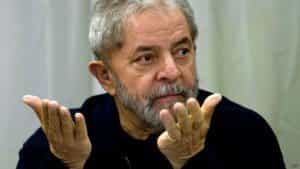

Quintus can be found at qcurtius.com. He is the author of the books On Duties, Thirty Seven, Sallust: The Conspiracy Of Catiline And The War Of Jugurtha, and other books. His work has been reviewed at Taki's Magazine. He can be followed on Twitter


There is a quote of Michel Houellebecq that I like very much. “Anything can happen in life,” he once said, “especially nothing.” And this may be true. But sometimes, even nothing can have wide-reaching effects.
This was the first thought that came to mind when I tried to understand how things could so quickly have gone from good to very bad for Brazilian president Dilma Rousseff. Sometimes there is no discernible reason for one’s fall from grace. Being in the wrong place at the wrong time can be enough of a reason.
So much depends on what the Stoics called fortuna, or Fortune.
How quickly it can all unravel! Let us use Brazilian politics as an example. In the December 5, 2011 edition of the New Yorker Magazine, Rousseff was the subject of a glowing article that celebrated her transition from communist radical to head of state. The future was bright. Everything was moving in a forward direction.
And then, all of a sudden, it wasn’t. The economy faltered after 2012, and nothing the government did seemed to make it any better. Inflation began to fester, then took off at a full gallop. For all her attempt to look presidential, the Brazilian president seemed (at least to this writer) aloof, distracted, and perpetually flummoxed.
But it is hard not to separate Rousseff from her predecessor, ex-president Lula. An astute politician who left office with nearly an 80% approval rating, he seemed blessed by fortune. He rose from extreme poverty to become president; and when I say extreme poverty, I mean extreme.
His father had had two families and a total of twenty-two children. He began working as a machinist at the age of fourteen and lost a finger five years later. His first wife died in childbirth because he had lacked access to medical care. But somehow he overcame these handicaps and entered politics; some would say he was at the right place at the right time. As Brazil’s political system became transformed after the end of the military period in the 1980s, his star rose.

Lula ran for president in 2002 when his predecessor Henrique Cardoso retired. It was a time of rising economic progress in the world, and the market for commodities was exploding. Everyone thought it would last for a long time. But perceptive observers would have smiled at the rosy, optimistic predictions. They would know that nations, like people, are often prisoners of their histories. In retrospect, it seems that much of Lula’s achievements were transitory, or perhaps even illusory. He happened to be at the right place at the right time.
When Lula got into office, he was able to ride the wave of success created by Cardoso’s anti-inflation program. Cardoso had completely overhauled Brazil’s currency system and replace it with the real. It was a massive reset of the national economic system, but it worked. Lula cobbled together some social programs created by Cardoso and greatly expanded them into what would be called the Bolsa Familia system (“family grant”). It is a massive program that provides financial assistance to poor or disadvantaged families; it reaches about a quarter of the country’s population.
Lula also initiated a consumer credit system for many citizens who had been unable to access loans of any kind. Under the credito consignado, financial institutions would be able to deduct payments directly from people’s employers. Lula might have presided over the program, but it would not have worked without his predecessor’s successes. Cynics would say that it was a simplified way for big business to pick the pockets of the average consumer.
These accomplishments—which look less impressive now than they did in 2010—came at some cost. Many would say that Lula simply tossed around a lot of money, rode the economic surge of the time, and coasted off the hard work of others. Corruption was still there, if one was prepared to look past the emotive headlines praising Lula.
The Brazilian press reported a huge government scandal in 2005 called the mensalão (“big monthly”). It was the usual story of payoffs being made to cement political alliances. Two of Lula’s closest aides (Antonio Palocci and Jose Dirceu) were brought down in the scandal, and it was opening this that paved the way for the rise of Dilma Rousseff. The philosophically-minded reader will no doubt smile at the irony of this fact.
Corruption was always there. But when the money was rolling in, and the economy was steaming forward, no one wanted to pay it too much attention. Lula was even reelected in 2006, despite being surrounded by scandal and corruption. He was hailed as the world’s best statesman, and he basked in the glory. Lula was everywhere, flexing his muscles; he even pushed to gain a permanent seat at the UN Security Council.
But fortuna always has a way of exacting her own revenge. One day we are riding the crests of waves; the next day, those same waves may grind our bodies against the seafloor.
Sometimes my Brazilian friends harangue me with great passion about how bad Dilma and Lula have been for the economy. As an ignorant foreigner, I listen politely, aware of the limitations of my knowledge of the subject. No doubt those in office should be held to account for the things that happen on their watches. But one could also see these two politicos, I gently suggest, as victims of circumstance, in the same way Herbert Hoover was when the Depression hit in 1929.
No one was more of a prodigy than Herbert Hoover. In the 1920s, he was considered a brilliant engineer and technocrat, a man who could work miracles. And yet it all evaporated after 1929. He would spend the rest of his life trying to vindicate his legacy. Perhaps the analogy is misplaced, and perhaps not.
“But you don’t understand! They’re corrupt!” my friends tell me. I know, I know, I say. And maybe they are right. But has not corruption always been there? Isn’t it often a matter of circumstance as to who takes the blame?
I remember one time I was with a girl in one of the museums in Rio de Janeiro. On display in one of the cases was the blood-stained shirt of President Getulio Vargas. Vargas shot himself in the chest in 1954 in a suicide brought on by an apparent fit of depression.
I told the girl I was with that it was sad that he had killed himself. It’s too bad, I said, that he had been afflicted by depression. But she was not sympathetic. Her eyes narrowed, and she looked at me bemusedly. “He was depressed,” she said, “because he was caught stealing money.”
Read More: 16 Ways To Save More Money